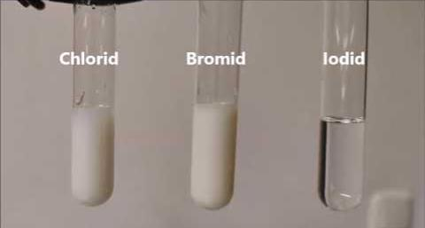
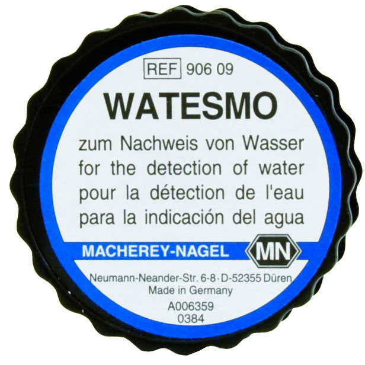
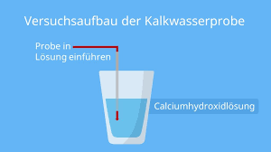

Nachweis von Halogenidionen
Halogenidionen können mit Silbernitratlösung (AgNO₃) nachgewiesen werden:
- Cl⁻ + Ag⁺ → AgCl (weiß)
- Br⁻ + Ag⁺ → AgBr (hellgelb)
- I⁻ + Ag⁺ → AgI (gelb)
Die Fällung kann durch Ammoniaklösung unterschieden werden: AgCl löst sich in NH₃, AgBr teilweise, AgI nicht.

Nachweis von Wasser
Wasser kann mit Watesmo-Papier nachgewiesen werden:
- Watesmo-Papier ist ein spezielles Indikatorpapier.
- Es färbt sich bei Kontakt mit Wasser von weiß zu blau.
Dieser Nachweis ist besonders praktisch, da er einfach und schnell durchzuführen ist.

Nachweis von Öl
Öl kann durch den Fettflecktest nachgewiesen werden:
- Ein Tropfen Öl auf Papier hinterlässt einen durchscheinenden Fleck, der nicht verschwindet.
Dieser Test unterscheidet Öl von anderen Flüssigkeiten wie Wasser, das keinen bleibenden Fleck hinterlässt.

Nachweis von Sauerstoff
Sauerstoff kann mit einem glimmenden Holzspan nachgewiesen werden:
- Der glimmende Holzspan entzündet sich in Anwesenheit von Sauerstoff erneut.
.jpg "Glimmender Holzspan für Sauerstoff")
Nachweis von Kohlenstoffdioxid
Kohlenstoffdioxid kann mit Kalkwasser (Ca(OH)₂) nachgewiesen werden:
- CO₂ + Ca(OH)₂ → CaCO₃↓ (weißer Niederschlag)
Das Kalkwasser trübt sich, wenn Kohlenstoffdioxid hindurchgeleitet wird.

Nachweis von Schwefelsäure
Schwefelsäure kann mit Bariumchlorid (BaCl₂) nachgewiesen werden:
- SO₄²⁻ + Ba²⁺ → BaSO₄ (weißer Niederschlag)
Der Niederschlag ist unlöslich in verdünnter Salzsäure.